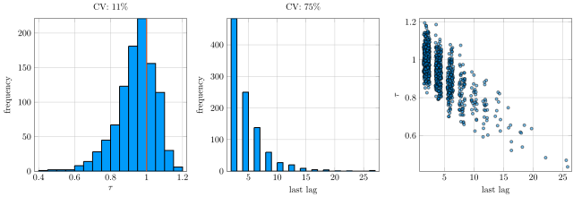
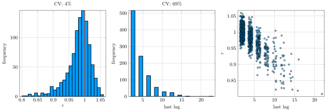
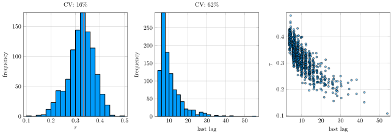
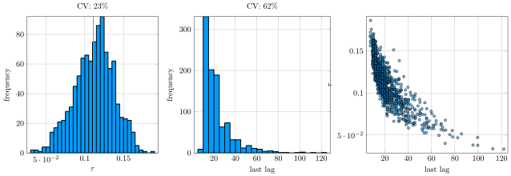
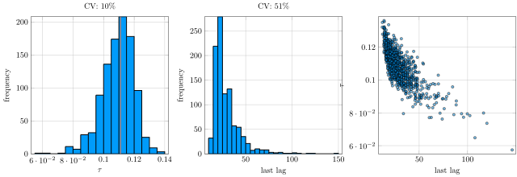

Sampling variation in effective sample size estimates (MCMC)
2017/06/12Introduction
MCMC samples, used in Bayesian statistics, are not independent --- in fact, unless one uses specialized methods or modern HMC, posterior draws are usually at highly autocorrelated. For independent draws,
\[ \text{variance of simulation mean} \propto \frac1N \]
where \(N\) is the sample size, but for correlated draws, one has to scale the sample size with a factor
\[ \tau = \frac{1}{1+2\sum_{k=1}^\infty \rho_k} \]
where \(\rho_k\) is the lag-\(k\) autocorrelation. \(\tau N\) is the effective sample size.
Usually, \(\rho_k\) is estimated from the data using the variogram
\[ V_k = \frac{1}{N-k} \sum_{i=1}^{N-k} x_i x_{i+k} \]
from which we obtain
\[ \rho_k = 1-\frac{V_k}{2\text{var}(x)} \]
where an estimator for the variance is also used. Then, to avoid using noisy estimates, we only add up to the last \(K\) where
\[ \rho_{K} + \rho_{K+1} \ge 0 \]
I will call \(K\) the last lag. Stan does something slightly different, using FFT for autocorrelations, and cutting off at the first negative \(\rho_K\), but for HMC this does not make a whole lot of difference.
The sampling variation
I was coding up the above calculation, and needed some unit tests. Surprisignly, I could not find anything on the sampling variation of \(\tau\), so I wrote some simulations in Julia (source code for everything). I did the following simulation exercise:
- for a given autocorrelation coefficient \(\phi\), simulate \(N\) draws from the AR(1) process \( x_t = \phi x_{t-1} + \sigma \epsilon_t \qquad \epsilon_t \sim \text{Normal}(0,1), \text{IID} \)
- calculate \(\tau\) and \(K\),
- repeat 1000 times and plot the results.
I use \(N=1000\) and \(N=10000\), as these would be typical sample sizes, first for a fairly efficient algorithm, then for a more stubborn but still manageable posterior.
IID samples
Let \(\phi=0\), then we expect \(\tau=1\) (red line in histogram, coefficient of variation on top).
Results with \(\phi=0\) (IID), \(N=1000\). (a) \(\tau\), (b) last lag \(K\), (c) scatterplot. 
Results with \(\phi=0\) (IID), \(N=10000\). (a) \(\tau\), (b) last lag \(K\), (c) scatterplot. 
With \(1000\) samples, there is a lot of variation in ESS: 800 could show up very easily in practice. \(600\) is not improbable either. Using up to \(10\) lags is not uncommon. For \(10000\) samples, the precision is improved considerably, we commonly use \(2\) or \(4\) lags. For both sample sizes, notice the high correlation between the last lag \(K\), and \(\tau\): given the method above, using more lags increases \(\tau^{-1}\), so this is to be expected.
AR(1) samples with \(\rho=0.5\)
This is a more autocorrelated process, here theory tells us that \(\tau\)=1/3.
Results with \(\phi=0.5\), \(N=1000\). (a) \(\tau\), (b) last lag \(K\), (c) scatterplot. 
Results with \(\phi=0.5\), \(N=10000\). (a) \(\tau\), (b) last lag \(K\), (c) scatterplot.

Notice that \(\tau\) is now more dispersed, compared to the IID case. Even with 10000 samples, the coefficient of variation is 6%, with 1000 it is around 1/6. In practice, expect effective sample sizes all over the place.
AR(1) samples with \(\rho=0.8\)
This is an even more autocorrelated process, here theory tells us that \(\tau\)=1/9.
Results with \(\phi=0.8\), \(N=1000\). (a) \(\tau\), (b) last lag \(K\), (c) scatterplot. 
Results with \(\phi=0.8\), \(N=10000\). (a) \(\tau\), (b) last lag \(K\), (c) scatterplot. 
There is now so much variation that in order to get an estimate for ESS that we can use for comparing various MCMC implementations, we need to run much more than \(1000\) samples.
Conclusion
For unit testing ESS calculations, I will need to use 10000 samples, with \(\pm10\) or similar error bands.
As a rule of thumb, I would ignore less than 1.5x variation in ESS for 1000 samples, or run longer chains: it may be just random noise.
Bibliography
- Gelman, Andrew, et al. 2013. Bayesian data analysis. 3rd edition. Chapman & Hall/CRC.
- Stan Development Team. 2016. Stan Modeling Language Users Guide and Reference Manual, Version 2.15.0. http://mc-stan.org